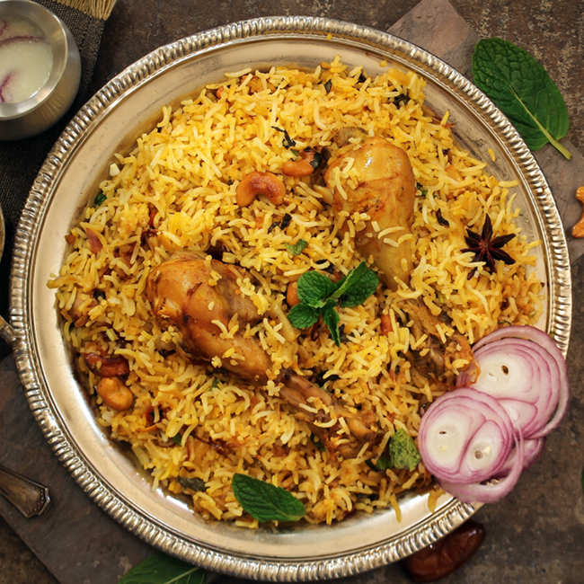
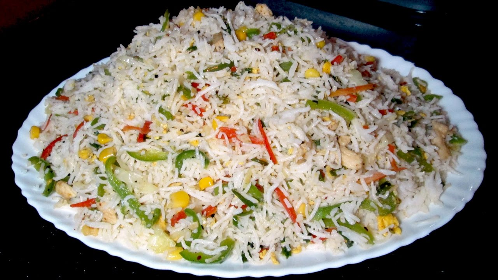

Chicken Baryani

Description
Biryani is an intricate rice dish made with layers of curried meat and rice. Kachi (raw) biryani, made with raw meat and parboiled rice and cooked together, and. Pakki (cooked) biryani, in which cooked meat and parboiled rice are steamed together.
Ingredients
- Oil/Ghee
- Bone-in, cut up, skinless chicken
- Onion
- Garlic + Ginger
- Yogurt
- Rice
- Baryani Masala
- Salt
Setps
- Step 1 Prepare saffron and kewra water
- Step 2 Saute onions and tomatoes for 2-3 minutes
- Step 3 Cook biryani on low heat for 5-6 minutes
- Step 4 Serve hot chicken biryani with your favourite chutney or raita
Grill Cheese Burger
Description
Looking for delicious yet cheesy meal? Then try this exotic Cheesy Grilled Chicken, which can be made in just a few minutes that too without putting in much efforts.
Ingredients
- 4 chicken breasts
- 1 cup spinach
- black pepper as required
- Garlic + Ginger
- 2 teaspoon paprika
- 2 teaspoon spice oregano
- 1 1/2 cup grated mozzarella
- Salt
Setps
- Step 1 Wash and marinate the chicken
- Step 2 Prepare stuffing
- Step 3 Pan fry and serve hot
Fried Rice Recipe

Description
Biryani is an intricate rice dish made with layers of curried meat and rice. Kachi (raw) biryani, made with raw meat and parboiled rice and cooked together, and. Pakki (cooked) biryani, in which cooked meat and parboiled rice are steamed together.
Ingredients
- 500 gm boiled basmati rice
- 1/2 cup chopped carrot
- 1/2 teaspoon garlic paste
- 1/2 teaspoon powdered black pepper
- 1 tablespoon vinegar
- Rice
- 1 tablespoon green chilli sauce
- 1/2 teaspoon ginger paste
Setps
- Step 1 Boil the rice or steam cook them
- Step 2 Saute all the veggies
- Step 3 Mix sauces in the veggies and cook with rice for 3-5 minutes
- Step 4 Garnish and serve